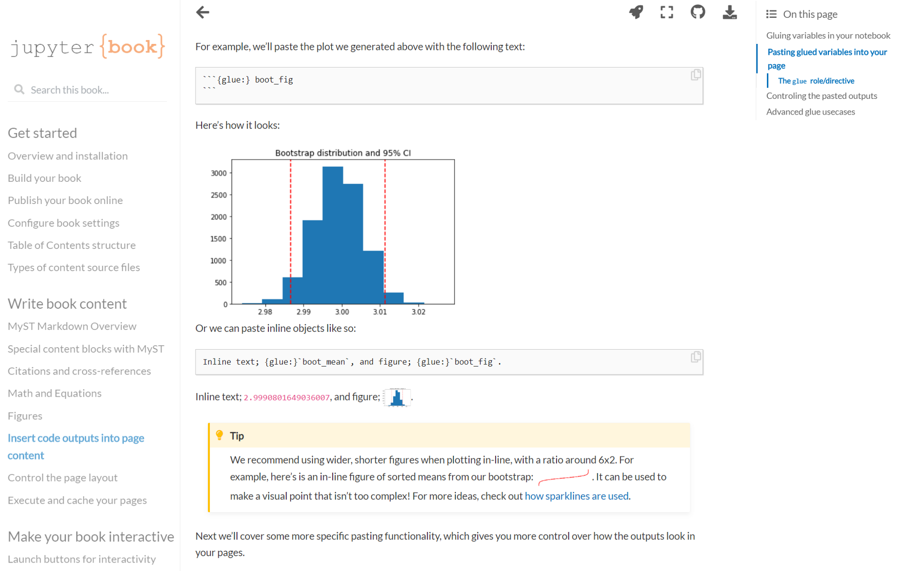

What we cover
In this tutorial we are going to create and publish a Jupyter book. Jupyter Book is an open source project for building publication-quality books and documents from computational material.
This is a gallery of Jupyter Books built from across the community.

Building a Jupyter Book broadly consists of these steps:
- Create your book's content. You structure your book with a collection of folders, files, and configuration.
- Build your book. Using Jupyter Book's command-line interface you can convert your pages into either an HTML or a PDF book.
- Publish your book online. Once your book is built, you can share it with others. Most common is to build HTML, and host it as a public website (we use GitHub pages).
To start this tutorial, you need Anaconda. If you don't already have Anaconda, go to anaconda.com and choose the appropriate Graphical Installer for your system (Windows, MacOS or Linux). Install the software on your system:
Here some tips if you have problems installing Anaconda: troubleshooting.
Conda environments help manage dependencies and isolate projects. This is particularly useful when some packages require specific Python versions. Since there is a known incompatibility for Windows OS notebook execution when using Python 3.8., we will use Python 3.7.
On Windows open the Start menu and open an Anaconda Command Prompt. On macOS or Linux open a terminal window.
We create an environment with a specific version of Python (3.7). We call the environment jbook:
conda create -n jbook python=3.7
First, you need to activate your environment as follows:
conda activate jbook
Now we can install modules in our environment. To do this, we use pip (pip is the standard package installer for Python).
- Install
jupyter-book
pip install -U jupyter-book
- Install the module
ghp-import
pip install ghp-import
ghp-import is a lightweight Python package that makes it easy to push HTML content to a GitHub repository
We are going to follow these instructions to quickly create a sample book:
- create a new folder of your choice (I created a folder with the name
books). - cd into your folder
cd books
- Create the book:
jupyter-book create mynewbook/
This will generate a mini Jupyter Book that you can both build and explore locally.
It will have a few decisions made for you, and you can explore the configuration of the book in _config.yml and its structure in _toc.yml.
Use this book as inspiration, or as a starting point to work from.
All of the configuration for your book is in a YAML file called _config.yml.
You can define metadata for your book (such as its title), add a book logo, turn on different "interactive" buttons (such as a GitHub button), and more. To get an overview about all options, visit the documentation. Here, we just make some minor changes:
- Open the file
_config.ymlin your code editor. - Change the title and author.
Now that you've got a Jupyter Book folder structure, you can create the HTML (or PDF) for each of your book's pages.
Once you've added content and configured your book, it's time to build outputs for your book. We'll use the jupyter-book build command line tool to create a HTML output.
cdinto your path (books)
cd books
- Run the following command to build your book (mynewbook).
jupyter-book build mynewbook/
This will generate a HTML site which will be placed in the _build/html folder
- Navigate to the html folder inside _build and open the file notebooks.html with your web browser.
Now that you've created the HTML for your book, it's time to publish it online. That's covered in the next section.
If you want to learn more about the details of how to build your book, visit the documentation.
Next, we add the folder to GitHub. I use GitHub Desktop to create a new repository:
- In the GitHub Desktop drop-down menu, click File and choose New Repository
- Use the name of your Jupyter book (mynewbook)
- Do not initialize it with a README file.
- Choose your local path (/books).
- Click on Create Repository.
- In GitHub Desktop, click Publish repository and choose to create a public repo (uncheck the option: keep this code private).
Now, we'll publish the build artifact of our book online, so that it is rendered as a website.
First, update the settings for your GitHub pages site:
- Move down to the GitHub Pages and click on Check it out here!
- Below Theme Chooser, click on choose a theme and click on select theme (it doesn't matter which theme you choose).
Next, you need to create a personal access token in GitHub:
- Follow these instructions (select all permissions in step 8) to create a personal access token
In your terminal:
cdinto the main branch of your book's root directory (which should contain the _build/html folder):
cd mynewbook
- call
ghp-importand point it to your HTML files, like so:
ghp-import -n -p -f _build/html
- Enter your github username.
- Enter your personal access token (not your GitHub password).
Typically after a few minutes your site should be viewable online at a url such as:
- https://.github.io//
To update your online book:
- Make changes to your book's content on the main branch of your repository.
- Re-build your book with:
jupyter-book build mynewbook/
- cd into your book
- As before use
ghp-importto push the newly built HTML to the gh-pages branch:
ghp-import -n -p -f _build/html
Congratulations! You have completed the tutorial and learned how to:
✅ Create a virtual environment for your Jupyter book
✅ Install Jupyter book in your virtual environment
✅ Create a Jupyter book
✅ Publish your book with GitHub Pages
Next, you may want to proceed with this tutorial to create a more complex book:

Thank you for participating in this tutorial. If you found any issues along the way I'd appreciate it if you'd raise them by clicking the "Report a mistake" button at the bottom left of this site.
Copyright: Jan Kirenz (2021) | kirenz.com | CC BY-NC 2.0 License